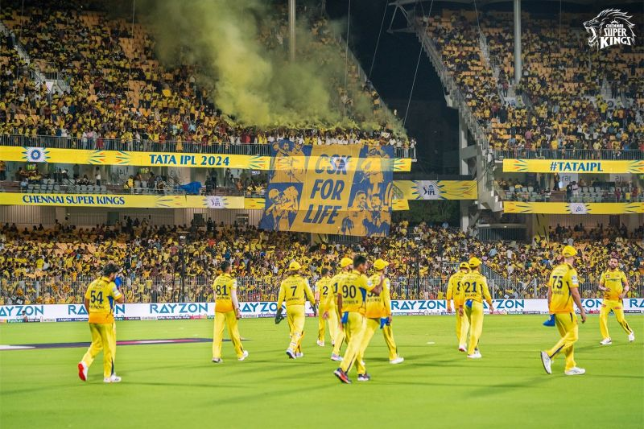

CHENNAI SUPER KINGS
The Pride of Chennai. The Roar of the Nation. Welcome to the home of the five-time champions.
Explore The LegacyThe Heart of a Champion
Founded in 2008, Chennai Super Kings (CSK) is more than just a cricket team; it's an emotion. Based in Chennai, the team has established a legacy of excellence, consistency, and thrilling comebacks under the iconic leadership of MS Dhoni.
Our home ground, the M. A. Chidambaram Stadium, is a fortress where the spirit of cricket comes alive. We believe in playing with courage, fighting until the last ball, and honoring the unwavering support of our fans. This philosophy has driven us to become one of the most successful franchises in IPL history.
Meet The Lions
MS Dhoni
Captain & Wicketkeeper
Ravindra Jadeja
All-Rounder
Ruturaj Gaikwad
Top-Order Batsman

Murali Vijay
opener

Suresh Raina
Top-Order Batsman
The Yellow Army
Our fans are our backbone. The "Yellow Army" is a global family, united by a shared passion for CSK. Their unwavering support, filling stadiums with a sea of yellow and roaring for every boundary and wicket, is our greatest strength. This team belongs to you.
Our Victorious Journey
2010: First IPL Title
Defeated Mumbai Indians to lift our first IPL trophy.
2011: Back-to-Back Champions
Became the first team to win consecutive IPL titles.
2018: The Ultimate Comeback
Returned after two years to win our third championship.
2021: The Fourth Roar
Dominated the season and defeated KKR in the final.
2023: Champions for the Fifth Time
A historic win against Gujarat Titans to equal the record for most titles.